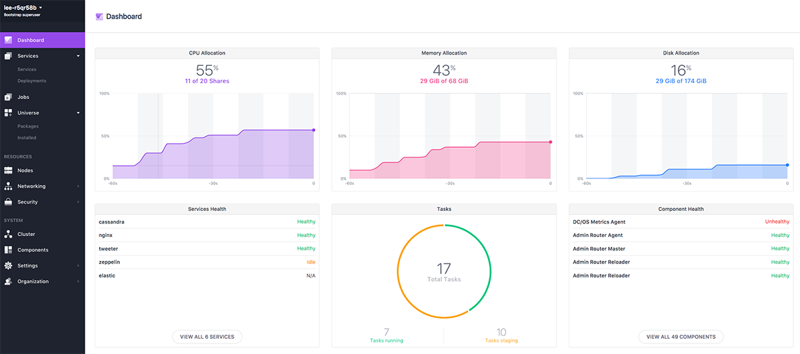
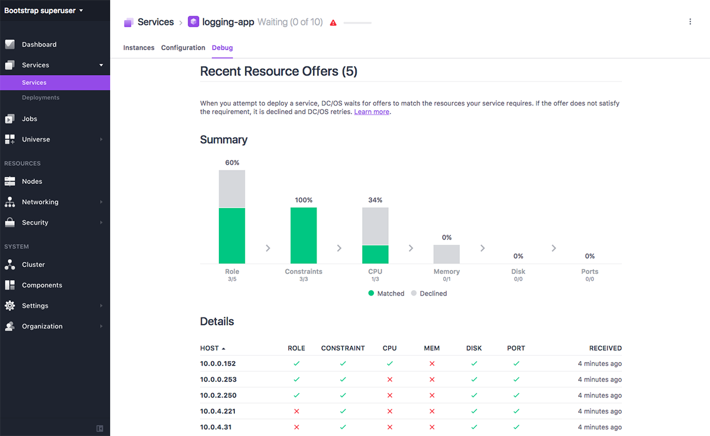
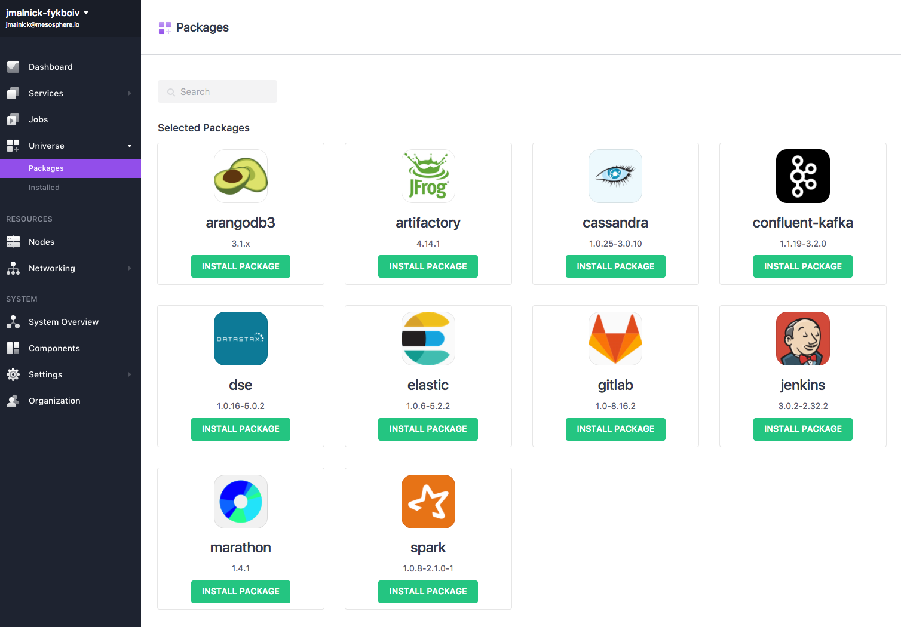

Today we’re excited to announce that DC/OS 1.9 is generally available! It includes updates that make deploying containers alongside data services—and operating them all on a common pool of resources—even easier. Our favorite features are reviewed here, but for a full list of what’s new please check out the release notes and documentation.
 DC/OS 1.9 Dashboard
New GUI
To start with the most noticeable change, the DC/OS 1.9 Graphical User Interface has some beautiful improvements! In addition to the new, light look and feel, we’ve added a tab in the services view to help you troubleshoot deployments. Now you can select any service, and see each host where that service is running, along with whether or not each host has matched the service’s requirements, for role, constraint, CPU, memory, disk, and port.
 Services deployment troubleshooting tab
The new GUI also includes improved navigation, especially in the service-create workflow. To learn more about the UI, take a look at the documentation. If you have feedback or would like to get more involved with the DC/OS user experience please join the UX working group!
GPU based scheduling
DC/OS 1.9 includes Apache Mesos 1.2, which allows DC/OS users to run GPU consuming frameworks like Tensor Flow on the same cluster as CPU consuming frameworks like Apache Cassandra. The addition of GPU resources to DC/OS is especially useful for users building or running deep learning and fast data applications.
In collaboration with Nvidia, we built native DC/OS support for injecting GPUs into containers. If you are already running your containerized GPU-based applications with nvidia-docker those same apps will run on DC/OS without modification—and you will have the added ability to isolate access to GPUs on a per-container basis. Our mantra is “test locally with nvidia-docker; deploy to production with DC/OS.”
GPU resources are in preview, and only accessible when using the Universal Container Runtime. For more information, check out the DC/OS documentation, and the more detailed Mesos documentation.
Operating on DC/OS
Unified Logging
Starting with DC/OS version 1.9, task, container, service, node, and host level logs can be sent to journald. Operators can then collect and filter them with the logging aggregator of their choice, which gives them the flexibility to account for their specific security and privacy concerns. To learn more about getting DC/OS logs, please read Mesosphere’s great blog post on it (part of their Day 2 Operations series), and check out the documentation. Logging is experimental, and because of a bug in journald, it’s disabled by default in this release, but please do turn it on and try it out.
Unified Metrics
In 1.9, Metrics are available through an HTTP API, and Mesosphere is in the process of building a variety of plugins to connect that API to the most popular aggregators, starting with Datadog. If you’d like to request a plugin (or build your own) please join the day 2 operations working group. You can read more about the new metrics functionality on Mesosphere’s blog, and in the docs.
Remote Container Shell (Debugging API)
DC/OS allows you to launch and run containers while remaining agnostic to their physical location on nodes in your cluster. Container debugging, introduced in 1.9, extends this idea by allowing DC/OS users to now launch additional processes inside their containers, without SSH, or any information about where those containers are running.
This is especially useful for quickly running cat to verify the contents of a configuration file or opening a long-running interactive bash session to debug issues more thoroughly. Debugging is experimental, and only available if you launched your containers using the Mesos container runtime or Universal Container Runtime.
Pods
Pods let you specify a set of one or more containers that should always run together on the same node. They can make sure that apps will always be able to communicate with necessary monitoring or service discovery, or ensure that co-dependent containers will never be provisioned on separate nodes, which is especially useful if you’re in the process of transitioning to microservices from a monolithic app.
You can set up pods by providing Marathon with a pod definition .json file, much like you do when specifying a Marathon app definition. For more information on how pods work under the hood check out the blog post by Elizabeth K. Joseph and Karl Isenberg. To learn more about using pods, please read this post from Amr Abdelrazik. Note that you need to use the Universal Container Runtime with pods, and that they are experimental in this release. Please try them out and file some bugs here.
Data Services
In addition to improvements to DC/OS itself, we’re really proud to announce new packages in the DC/OS Universe service catalog, which our amazing technical partners created using the new software development kit (SDK). The SDK itself isn’t ready for general use yet, so special thanks to the companies who took the time to work with Mesosphere to both contribute the following new, awesome packages, and to help improve the SDK.
 Packages in the DC/OS Universe service catalog
Alluxio
Alluxio Enterprise Edition is based on an open source project that, like Apache Mesos, started at UC Berkeley’s AMPLab. Alluxio connects various data applications (Apache Spark, Apache Flink, Hadoop Mapreduce, and others) to data storage systems (Amazon S3, Google Cloud Storage, Hadoop, etc.), while maintaining data transfer speeds. To learn more, sign up for the webinar on April 4th.
Datastax Enterprise Max
Datastax offers enterprise products built on Apache Cassandra, and contributes to the open source project as well. A few months ago they created a Universe package for Datastax Enterprise (DSE), and now have added DSE Max, which includes analytics and search. To learn more, sign up for the webinar on April 18th.
Couchbase
Couchbase Server is an open source, distributed NoSQL document database, with integrated caching, that provides the power of SQL with the flexibility of JSON. It replicates data over multiple regions, for high availability and disaster recovery (HA/DR). Couchbase Lite runs on mobile and Internet of Things (IoT) devices, and syncs to Couchbase Server. To learn more, sign up for the webinar on May 2nd.
Elastic Stack
Elastic Stack is an out of the box version of the popular, open source ELK stack (Elasticsearch, Kibana, and Logstash), which aso includes Beats. Elastic Stack can be used for logging, and to used to ingest, search, analyze, and visualize other types of data in real-time. Managing the subcomponents of the Elastic Stack separately can be complex, but DC/OS makes it easy to launch and maintain.
Redis
Redis is a in-memory data structure store, used as a NoSQL database, cache and message broker, for high performance operations. Redis Labs, the company behind the Redis open source project, offers an enterprise product that includes automated scaling, clustering, multi-zone high availability, auto-failover, continuous monitoring and 24x7 support. To learn more sign up for the webinar on May 9th.
Try out the new packages
For more details about the new packages, and the Universe, check out Mesosphere’s blog post on new data services. All packages are installable from the DC/OS UI with just a couple clicks or commands, and you can browse the complete list of packages available through the DC/OS Universe here.
Learn more about DC/OS 1.9
This is a featureful release, and we’re excited to hear your questions. We’ll have a Q&A office hours with Tal Broda (Mesosphere’s VP of Engineering) on March 30th, where you can ask about any implementation questions that come up, via video chat. For help any time, join the DC/OS community mailing list, or Slack. And of course, if you find bugs we’d love your reports in JIRA. Try 1.9 out today; we hope you enjoy it!